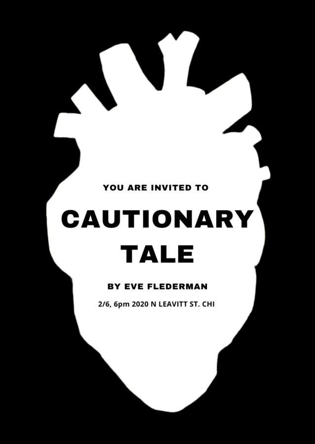

CAUTIONARY TALE : AN INTERACTIVE EXHIBT OF ART BY EVE FLEDERMAN
Come see an exciting and innovative exhibit of art about love, and the soul. Mingle with other art lovers, be grounded with art you can touch and engage with in a way you haven’t before. Explore the beauty of the Chicago art scene in an untraditional venue with an emerging artist.